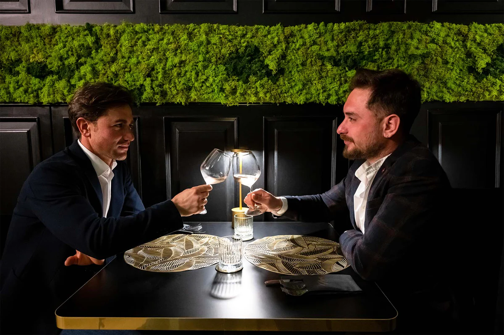

Olio Extravergine Bio in Bottiglia Coratina 500ML
Quello ottenuto dall'oliva coratina è un olio di qualità prodotto in purezza che garantisce proprietà benefiche per l'organismo prolungate nel tempo.

Olio Extravergine Bio in Bottiglia Peranzana 500ML
L’olio di oliva ottenuto dalla varietà peranzana contiene molteplici sfumature ed è un prodotto di altissima qualità particolarmente apprezzato a carattere nazionale per il suo sapore delicato e ricco di caratteristiche sensoriali.

Olio Extravergine Bio in Bottiglia Blend 500ML
Un blend è un olio d oliva ottenuto dalla miscelazione di diverse varietà di olive. Il mastro olificio, come un sommelier, seleziona e assembla le diverse cultivar per ottenere un prodotto equilibrato e armonico, con un profilo aromatico complesso e sfaccettato.